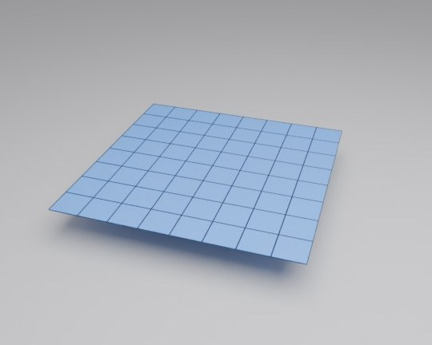
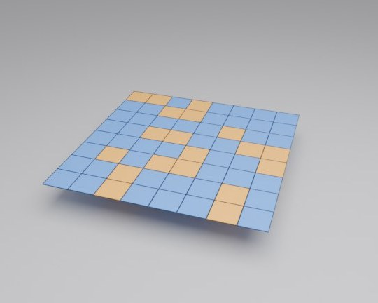

Bonus lesson
Select Random
Select Random adds randomly chosen elements to your selection. It works in Object Mode and in Edit Mode. Find it under Select › Select Random. The manual lists no shortcut key for it.


The options
- Ratio: the share of items that should end up selected. For example 0.5 selects half of all items that are not hidden.
- Random Seed: a number that influences which specific items get picked. Change it to get a different pattern.
- Action: Select adds random items to the selection. Deselect removes random items from the selection.
One detail to remember
The manual notes that the existing selection is ignored. If half of the items are already selected and you set Ratio to 0.1, nothing is deselected, and it does not pick 10% of the unselected items either. It always picks 10% of all visible items and adds them to the selection.
Read the manual page on Select Random.
Try it
This exercise is our own suggestion and has not been run step by step in the GUI. Add a plane, enter Edit Mode and subdivide it a few times. Switch to Face select mode and make sure nothing is selected. Choose Select, then Select Random. Open the Adjust Last Operation panel and change Ratio and Random Seed to see the selection change. Use Ctrl+Z to undo.